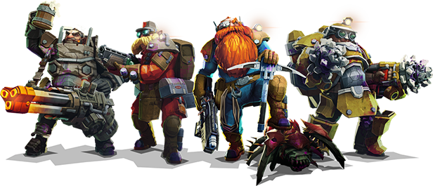

Aquí puede volver a la página principal.
El perforador
Esta clase dispone de una amplia selección de armamento para abrirse paso en las cavernas de Hoxxes IV, así como para eliminar a los aliens que se encuentre en su camino. Es la clase más propensa al fuego amigo, debido al daño de area que sus armas producen.
Entre su variado armamento, destacamos los siguientes:
- CRSPR Lanzallamas
- Capaz de incinerar casi todo lo que se encuentra en su camino. Muy útil contra grupos de enemigos.
- Cañón de hielo
- Congela a los aliens y provee tiempo alperforado o sus compañeros para que despachen de estos.
- Carga explosiva
- Coloca una bomba que cabe en la mano para poder detonarla a distancia y así remover tanto tierra como aliens.
"Ain't no obstacle I can't clear!".
El artillero
Es sin duda la clase más enfocada a lidiar con los aliens, usando una amplia variedad de armas desde un lanzacohetes, magnums o hasta una minigun. Posee un escudo que se puede colocar y proteger a los enanos dentro del mismo de casi todas las amenazas exteriories.
En su arsenal, las herramientas de protección que más destacan son:
- "Lead Storm" Minigun"
- Fuego continuo de alto calibre con gran capacidad de munición, ideal para espacios cerrados y supresión de los aliens.
- "Bulldog" Revolver pesado
- Magnum de un calibre de 26mm, especializada en gran daño por cada disparo, pero con poca munición en intercambio.
- Generador de escudo
- Como su nombre indica, este objeto al ser colocado en el suelo genera una pompa esférica que mantiene aliens a raya y así conseguir un respiro temporal.
"It ain't a gun if it don't weigh at least one hundred pounds!".
El ingeniero
El ingeniero posee herramientas más defensivas que los demás enanos, haciendo uso de su dispensador de plataformas para crear techos, torres entre otros, así como una escopeta semiautomática para corto rango, o incluso un lanzagranadas.
Entre su equipo, posiblemente el más variado entre las clases, señalamos las siguientes herramientas a su disposición:
- "Breach cutter"
- Como su nombre indica, lanza rayos de plasma horizontales que cortan a los aliens a su paso. Capaz de atravesar roca y tierra.
- "Lok1" rifle inteligente
- Rifle de asalto modificado para que apunte automáticamente a los enemigos mediante su I.A. integrada.
- "LMG Gun Platform
- Torretas de fácil construcción y uso, ya que al colocarlas disparan a todo alien que entre en su rango. Puede colocar una sola versión más fuerte, o dos más debiles según la situación.
"Turrets and explosions...you've come to the right place."
El explorador
El explorador viene con sus ventajas y desventajas. Es la clase mejor equipada para desplazarse por las cavernas, pero también dispone del armamento más ligero, teniendo que andar con cuidado de no ser rodeado.
Su arsenal, más enfocado en el soporte y eliminación de objetivos importantes resaltamos:
- M1000 clásico
- Rifle de precisión semiautomático, enfocado a acabar rápidamente con aliens a distancia como si fuera un francotirador.
- Pistola de bengalas
- Posiblemente su herramienta más importante, pudiendo iluminar cavernas mejor que cualquier otra clase con estas potentes bengalas.
- Generador de inhibición
- Crea un campo esférico donde sea lanzada para ralentizar a cualquier alien que pase por el mismo, así como incrementando el daño producido a estos.
"Afraid of the dark? No need, you got me.".